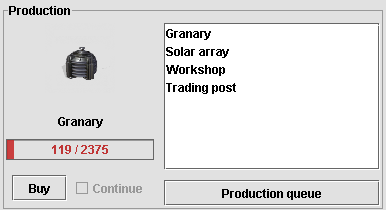
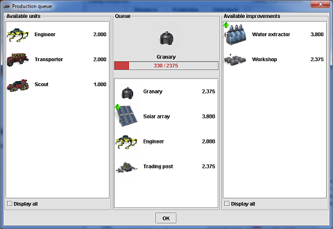

Colony production
Colonies on Mars can produce colony improvements or units. The colony
production panel displays image of current production, current progress
and production queue. It also allows to buy the current production and
to set continuous production for units.
Production workforce is composed of colonists that are not assigned to
a tile or an improvement. At the end of each turn production points
equal to the number colonists in the production workforce is added to
the progress of current production. This value is reduced by tax ratio,
if a tax is collected from colonies. For example, if a colony has 10
colonists in its production workforce and the tax is 10% then 9
production points will be added to current production.

Production queue button can be used to bring up the production queue
management screen. This interface is used to set colony's improvement
and unit production order. When the production of an item in the queue
is complete, the colony will automatically start next item.
